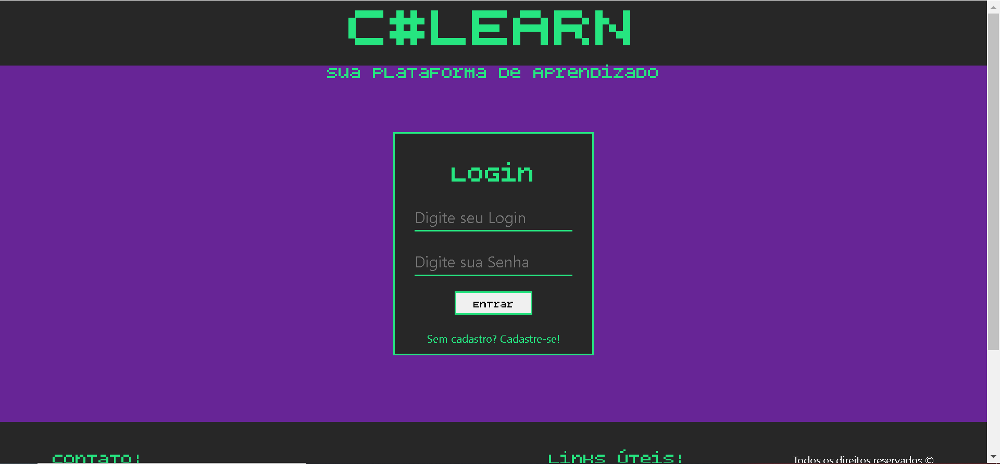
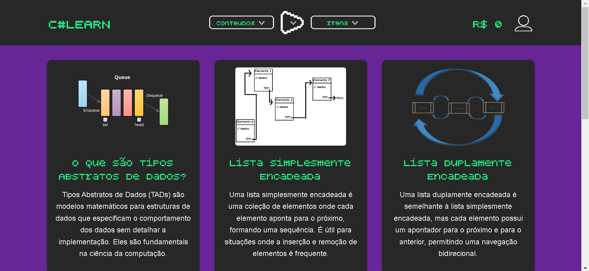
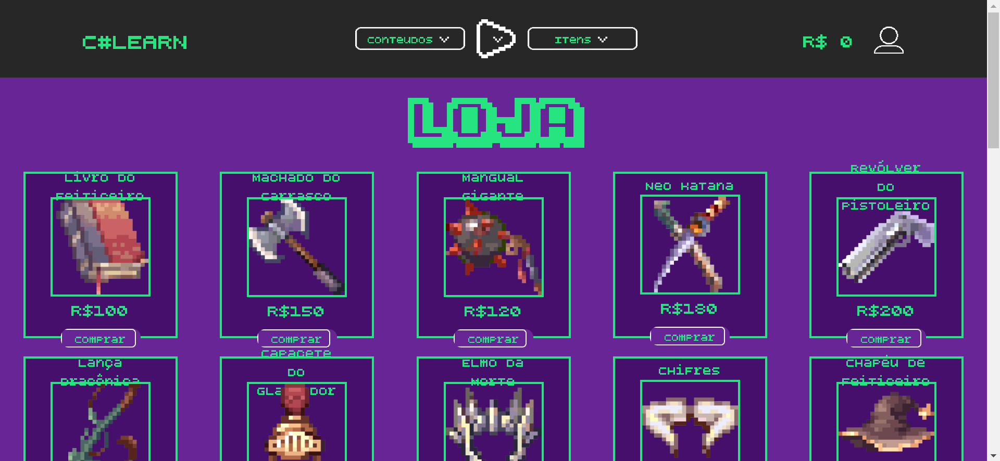
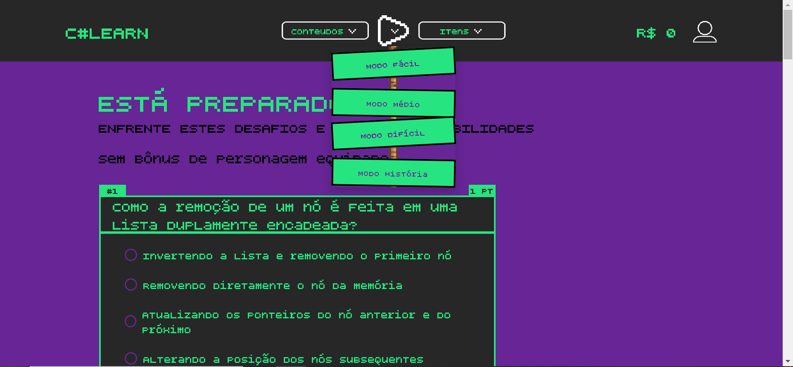
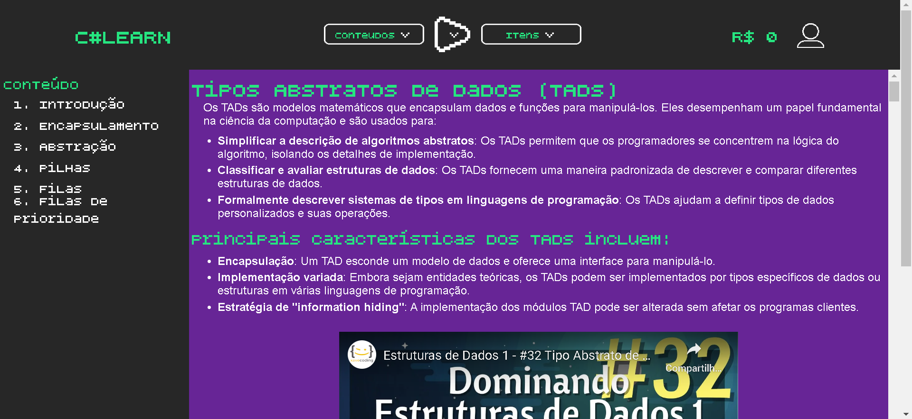
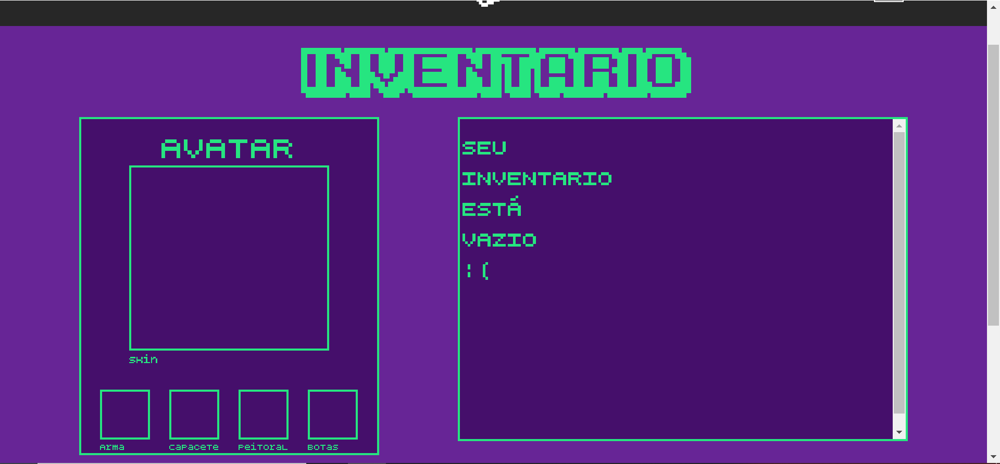

O SLearn é um sistema feito em grupo para a aquisição de nota parcial na matéria de Estrutura de Dados do curso DS-AMS da Fatec de Presidente Prudente.
Sendo um sistema simples com conteúdos educativos sobre: "Listas de Encadeadas", e "Tipos Abstratos de Dados". As listas encadeadas contém duas versões: A simples, e a Dupla
Técnologias utilizadas
Foram utilizadas linguagens web para montar o site como:
Linguagem de marcação HTML
Linguagem de estilização CSS
JavaScript
PHP
Prints do projeto
O projeto se encontra na fase final, considerando que foi feito para um trabalho em grupo para a Fatec de Presidente Prudente

Essa é a tela inicial quando você entra no site

Após o login ser feito, ele entra nessa página, onde ficam disponiveis as aulas, a loja para a compra de itens para o perfil e o quiz

A loja é feita para customizar o perfil do usuário, dando uma sensação de evolução conforme o resultado no quiz

O quiz foi feito com três niveis de dificuldade e era pretendido um modo história, porém não foi finalizado
Os resultados do quiz dão recompensas para serem gastas na loja do site
O quiz também tem um sistema de perguntas aleatórias e uma pontuação variante conforme o nivel de dificuldade selecionado

O aprendizado foi feito por "capitulos", além de ter um conteúdo completo, com videos de exemplo, código para demonstração e explicação não somente do código, mas da teoria por inteiro!

O Inventário é onde ficam armazenados os itens comprados na loja, sendo um slot (local) para cada item, como chapéu, roupa, arma e calçados
Se você teve interesse no código e deseja ver com mais detalhes, veja nosso repositório GitHub!